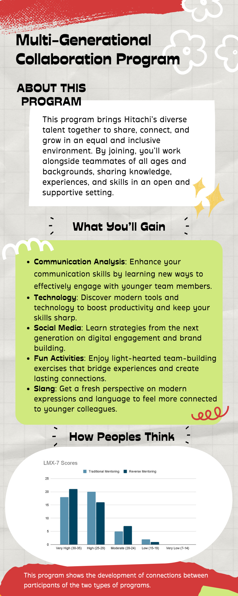
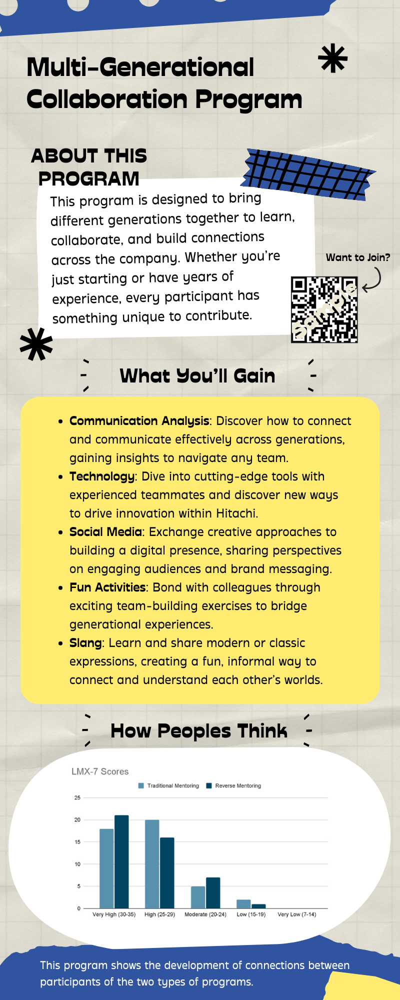
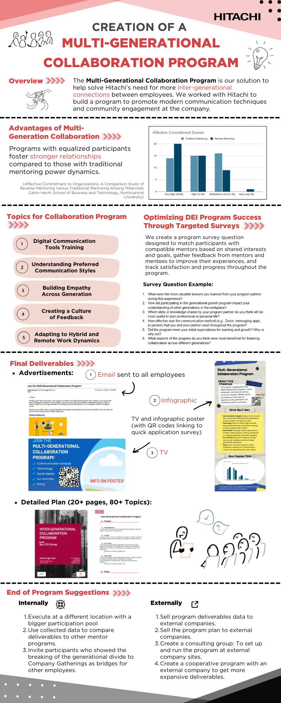

Hitachi Reverse Mentoring DEI Program (2024)
Project Overview
The Hitachi Reverse Mentoring DEI Program was a client-facing consulting project focused on designing a structured multi-generational collaboration initiative for Hitachi. The project explored how reverse mentoring could strengthen communication, improve understanding across generations, and support a more inclusive and connected workplace environment.
Rather than launching the program directly, the team developed a practical foundation that Hitachi could use for future implementation. The project combined workplace research, program planning, communication materials, and implementation-oriented content into a unified deliverable designed for real organizational use.
Key Achievements
- Contributed to the design of a structured reverse mentoring and multi-generational collaboration program
- Supported research on workplace communication across generations and reverse mentoring practices
- Helped develop client-ready materials that could support future internal rollout
- Designed infographic materials tailored to different generational audiences
- Supported the organization of program content into a clear and implementation-oriented final deliverable
- Helped translate DEI goals into a more practical and workplace-focused program framework
My Contribution
I contributed to the development of the Hitachi Reverse Mentoring DEI Program by supporting the design of a workplace initiative aimed at improving communication and collaboration across generations.
My work focused on helping shape research-backed content and communication materials that could turn a broad DEI concept into a more structured and actionable program. In particular, I designed infographic materials tailored to different generational audiences, helping communicate the purpose, structure, and value of the proposed program in a more accessible and visually engaging way.
Research and Program Development
- Supported research on reverse mentoring practices and multi-generational workplace communication
- Helped organize insights on how employees from different generations could learn from one another through structured interaction
- Contributed to the development of a program concept that connected employee engagement with communication improvement
- Assisted in shaping supporting content that strengthened the rationale behind the proposed initiative
Communication and Content Support
- Designed infographic materials for different generational audiences to introduce and promote the program
- Created visual content that communicated the program’s purpose, structure, and value in a clear and engaging way
- Helped translate research findings into more accessible and audience-friendly messaging
- Contributed to communication materials that supported internal awareness and future program rollout
Implementation-Oriented Project Support
- Helped develop supporting materials for participant understanding and future program rollout
- Contributed to content such as mindset readings, communication assets, and structured program guidance
- Assisted in organizing the final project output into a professional and client-ready format
- Supported the creation of a deliverable that was both research-informed and practical for business use
Infographic Preview

Infographic I designed for the older generation audience to introduce the program and encourage participation.

Infographic I designed for the younger generation audience to introduce the program and encourage participation.

Final infographic summarizing the overall concept and structure of the program.
Business Impact
This project supported Hitachi in exploring a more structured approach to multi-generational communication, employee engagement, and inclusive workplace learning.
By developing research-backed program materials and communication assets, the project provided the client with a clearer path for future implementation. Instead of presenting reverse mentoring only as a concept, the team created a more practical framework that could help the organization communicate, support, and potentially launch the initiative internally.
The project also demonstrated how DEI-focused ideas can become more actionable when supported by research, structured planning, and clear communication design.
Project Execution & Learning
This experience strengthened my ability to contribute to projects that connect workplace communication, organizational strategy, and structured program design.
Through this project, I gained hands-on experience in turning broad business and DEI objectives into practical deliverables that could support real implementation. I also developed a stronger understanding of how generational differences can influence communication and collaboration, and how thoughtful program design can help bridge those gaps in a professional environment.
The project strengthened my skills in research synthesis, content development, visual communication, and team-based project execution. It also gave me experience contributing to a client-oriented initiative where the final deliverable needed to be both well-supported and realistically usable.
Tools Used
Research & Program Design
Workplace Research, Reverse Mentoring Research, Multi-Generational Communication Analysis, Program Planning
Content & Communication Materials
Infographic Design, Visual Communication, Internal Engagement Materials, Presentation Development
Collaboration & Project Execution
Team Collaboration, Client-Facing Deliverables, Project Planning, Content Organization